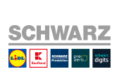
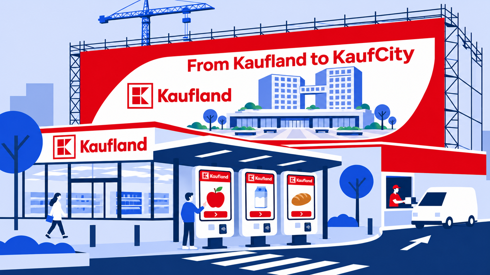

Unlock land value
Explore new uses and property assets on established retail sites, alongside a modern store and integrated facilities.

A STRATEGIC PARTNERSHIP PROPOSAL
A new chapter for retail, real estate and urban life.
Explore the opportunity ↗01 / THE OPPORTUNITY
What if a place people visit every day became a place where life happens all day?
Retail sites that once stood at the edge of growing cities may now sit within valuable urban neighbourhoods. The 2-Minute City builds on the strength of an established retail anchor to bring more of everyday life together.
Discover the concept ↗MORE LIFE. CLOSER TOGETHER.
Apartments, shopping, work, learning, lifestyle and storage—connected in one walkable destination.
THE 2-MINUTE CITY / SHORT FILM
A new perspective on hypermarkets and the places we create.
Watch “Hypermarkets,” a short film from The 2-Minute City, and explore the thinking behind a more connected urban future.
Watch on YouTube ↗HYPERMARKETS / THE 2-MINUTE CITY
02 / THE CONCEPT
A retail anchor at the heart of a connected neighbourhood. Each layer adds a new reason to be here.
A VERTICAL COMMUNITY
Inspired by the building section in the 2-Minute City proposal, the concept brings homes, work, learning, retail and logistics together around an everyday anchor.
Illustrative concept. The final mix and arrangement are subject to feasibility and design.
03 / THE POTENTIAL FOR SCHWARZ GROUP
A platform connecting the Group’s retail strength with property, services and community life.
Explore new uses and property assets on established retail sites, alongside a modern store and integrated facilities.
Connect apartments, offices and everyday services to the retail anchor, creating more opportunities for convenient shopping.
Explore revenue from apartments, offices, education, lifestyle, commercial space, storage and parking under an agreed business model.
Create a distinctive urban innovation project with potential for media visibility, a compelling Group case study and future replication.
Position Kaufland at the heart of neighbourhood life with shared spaces, useful services and community programmes.
Explore how retail, digital services and circular-economy expertise could contribute to a single integrated development.
Combine vertical, horizontal and underground development to bring more uses together while making room for public life and green space.
Participation in operating and managing spaces could create additional long-term income, potentially helping support the higher upfront cost of underground construction.
THE DIFFERENCE / DEVELOPMENT + OPERATION
Underground construction can be costly for a conventional development model focused on selling completed space. A partnership that also retains or operates selected assets may have more ways to capture value over time—through rent, services and operations. Whether those revenues justify the investment must be tested for each site.
Potential outcomes depend on site selection, construction and operating costs, financing, market conditions and the partnership agreements. The proposed business model and any competitive advantage require feasibility assessment.
04 / THE FIRST FLAGSHIP
Barbu Văcărescu offers a proposed starting point for a new model of retail-led urban development.
A PROPOSED THREE-STAGE JOURNEY
Explore a temporary store on a nearby site, approximately 200 metres away.
Redevelop the existing site into a mixed-use destination.
Integrate a new store within the completed development.
The site arrangement, relocation plan and costs are subject to agreement and feasibility assessment.
THE TRANSITION / KEEPING KAUFLAND CLOSE
While KaufCity is being built, a temporary store, fast local delivery and KaufDRIVE collection could help customers continue shopping with ease.
A visible Kaufland presence and a clear vision of the future keep the community connected to the store throughout the transition.
TEMPORARY STORE · LOCAL DELIVERY · KAUFDRIVE · COMMUNITY SUPPORT
Illustrative concept. Temporary operations and services depend on site feasibility and agreement.

TWO DEVELOPMENT ROUTES
Both routes begin with the same site. Direct development offers the potential to build a longer-term platform—subject to feasibility, financing and agreement.
Kaufland contributes its site; UBRIS and ONE United Properties develop the project under an agreed structure. Kaufland would receive completed spaces or other agreed value for its contribution.
Preliminary estimates from the UBRIS–Kaufland–ONE proposal, subject to independent valuation and feasibility. Turnover is revenue, not profit.
A proposed joint entity develops the project with selected partners. Alongside the flagship, it could create a repeatable business model with participation in property and services over time.
The turnover and value increases are preliminary proposal assumptions, applied here as an illustrative scenario; they have not been independently established for direct development. Income depends on ownership, costs, financing and agreements.
05 / THE PARTNERSHIP
A proposal to bring complementary strengths together.
UBRIS proposes a joint 2-Minute City entity, with Schwarz Group as the largest shareholder and UBRIS as strategic and execution partner. Developers, investors and operators would contribute the expertise and capital needed for each project.
Ownership, governance, contributions and returns would be agreed through due diligence and negotiation.
FROM ONE FLAGSHIP TO A WIDER PLATFORM
If the pilot proves commercially and operationally viable, the concept could evolve into a family of KaufCity flagships, adapted to local markets and opportunities.
06 / LET'S BEGIN
The first step: a joint feasibility study.
Let’s discuss the Barbu Văcărescu pilot, assess the development routes and define the next steps together.
Discuss the opportunity ↗Mihai Sirbu
Founder & Head of Strategy, UBRIS Center
mihai.sirbu@ubris.com